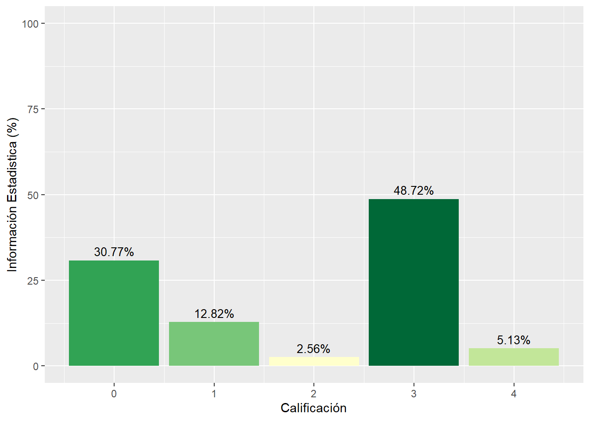

4.1 Diagnóstico de la oferta de operaciones estadísticas
Una vez aplicados los formularios de oferta y demanda de información estadística en todas las dependencias, se cuenta con los insumos necesarios para realizar el diagnóstico de la información estadística que produce la entidad, que a su vez, es insumo fundamental para la formulación del Plan. Dicho diagnóstico, incluye tanto el análisis de oferta como el de demanda, con el fin de establecer cuál es el estado real de la producción y en qué grado se satisfacen las necesidades de información (internas y externas).
4.1.1 Análisis de la oferta de información
La oferta en este caso se entiende como la información producida y puesta a disposición de posibles usuarios en un momento determinado. Para evaluar la oferta se tomó como primer criterio de evaluación a modo de marco general, el carácter misional o estratégico de la información producida por la UN. Lo anterior es claro en el sentido en que la producción de estadísticas debe obedecer a las necesidades de información para la toma oportuna y acertada de decisiones estratégicas de la universidad, cabe aclararse, que no se desconoce la importancia de la información estadística que permite medir y hacer seguimiento a la gestión de cada una de las áreas vinculadas al proceso, solo que en el desarrollo del Plan solo se consideró la producción de información estratégica.
Para la Universidad Nacional de Colombia se identificó una producción de 43 operaciones estadísticas y 69 registros administrativos. A la totalidad de las operaciones documentadas se les aplicó el proceso de revisión técnica y se sugirieron modificaciones para mejorar sus procesos de producción.
| Operación | Productor | Código |
|---|---|---|
| Consolidación de información de inscritos y admitidos a los programas curriculares de pregrado semestralmente por la universidad Nacional de Colombia | Dirección Nacional de Admisiones | dna12:1 |
| Consolidación de información de inscritos y admitidos a los programas curriculares de posgrado semestralmente por la universidad Nacional de Colombia | Dirección Nacional de Admisiones | dna12:3 |
| Estadísticas de gestión anual del Sistema de Bienestar Universitario | Dirección Nacional de Bienestar Universitario | dnbu16:1 |
| Medición de la Satisfacción del Usuario | Dirección Nacional de Bienestar Universitario | dnbu16:2 |
| Identificación de potencialidades y vulnerabilidades al momento del ingreso para estudiantes de pregrado. | Dirección Nacional de Bienestar Universitario | dnbu16:3 |
| Medición de Indicadores de Gestión | Dirección Nacional de Bienestar Universitario | dnbu16:4 |
| Monitoreo de prensa | UNIMEDIOS | unimedios19:1 |
| Seguimiento a las órdenes contractuales de prestación de servicios de personas naturales de la Universidad Nacional de Colombia | Gerencia Nacional Financiera y Administrativa | gnfa20:1 |
| Informe Seguimiento a la información del proceso de Gestión de Bienes | Gerencia Nacional Financiera y Administrativa | gnfa20:2 |
| Informe consolidado de Ejecución Presupuestal (Presupuesto) | Gerencia Nacional Financiera y Administrativa | gnfa20:3 |
| Memoria Financiera (Gerencia Nacional Financiera y Administrativa) | Gerencia Nacional Financiera y Administrativa | gnfa20:4 |
| Indicadores del proceso de Adquisición de Bienes y Servicios | Gerencia Nacional Financiera y Administrativa | gnfa20:5 |
| Estadísticas de contratación | Gerencia Nacional Financiera y Administrativa | gnfa20:6 |
| Estados Contables Consolidados UN | Gerencia Nacional Financiera y Administrativa | gnfa20:8 |
| Seguimiento al sistema de peticiones de la Universidad Nacional | Vicerrectoría General | vrg21:1 |
| Seguimiento a la rendición de cuentas | Oficina De Planeación Sede Bogotá | opb23:1 |
| Consolidar las estadísticas de la Sede Bogotá | Oficina De Planeación Sede Bogotá | opb23:2 |
| Seguimiento al Plan de Acción institucional | Oficina De Planeación Sede Bogotá | opb23:3 |
| Libro de capacidades de Investigación de la Universidad Nacional de Colombia | Vicerrectoría de Investigación | vri25:1 |
| Consolidación de la información estadística para los procesos de autoevaluación y evaluación continua | Dirección Nacional de Programas Curriculares de Posgrado | dnpr26:1 |
| Consolidación de la movilidad estudiantil entrante y saliente | Oficina de Relaciones Exteriores | dre28:1 |
| Convenios nacionales e internacionales | Oficina de Relaciones Exteriores | dre28:3 |
| Indicadores opinión de apoyo a la autoevaluación de los programas de pregrado | Dirección Nacional de Programas Curriculares de Pregrado | dnpcp32:1 |
| Indicadores estadísticos de apoyo a la autoevaluación de los programas de pregrado | Dirección Nacional de Programas Curriculares de Pregrado | dnpcp32:2 |
| Consolidación de Estadísticas de Personal Académico y Administrativo | Dirección Nacional de personal académico y administrativo | dnpa33:1 |
| Consolidación del Informe Docente | Dirección Nacional de personal académico y administrativo | dnpa33:2 |
| Consolidación Programación anual Presupuesto Gastos de Nómina | Dirección Nacional de personal académico y administrativo | dnpa33:3 |
| Consolidación del gasto mensualizado de nómina por sede (PAC - Plan anual mensualizado de caja) | Dirección Nacional de personal académico y administrativo | dnpa33:4 |
| Informe anual costos de personal | Dirección Nacional de personal académico y administrativo | dnpa33:5 |
| Construcción de la revista de estadísticas e indicadores de la Universidad Nacional de Colombia | Dirección Nacional de Planeación y Estadística | dnpe40:1 |
| Seguimiento al Plan de desarrollo de la Universidad Nacional de Colombia | Dirección Nacional de Planeación y Estadística | dnpe40:2 |
| Distribución y seguimiento de los recursos de inversión | Dirección Nacional de Planeación y Estadística | dnpe40:3 |
| Consolidación de Indicadores de Extensión de la Universidad Nacional de Colombia | Dirección Nacional de Extensión, Innovación y Propiedad Intelectual | dne41:2 |
| Generador de indicadores | Dirección Nacional de Información Académica | sia61:1 |
| Encuesta de satisfacción al usuario | Programa de egresados | pe78:1 |
| Reporte mensual, Unidad del Servicio Público de Empleo | Programa de egresados | pe78:2 |
| Reporte indicadores del Sistema Nacional de Bibliotecas | Oficina Nacional de Bibliotecas | sinab79:1 |
| Consolidación de Procesos Judiciales y de conciliación de las Sedes | Dirección Jurídica Nacional | djn83:1 |
| Consolidación de la información editorial de la Universidad Nacional de Colombia | Editorial UN | editorial84:1 |
| Consolidado de indicadores ambientales de la Universidad Nacional | Sistema Gestión Ambiental | siga87:1 |
| Consolidación de la medición de indicadores ambientales - GREENMETRIC | Sistema Gestión Ambiental | siga87:2 |
| Consolidación de la información de encuestas para los procesos de autoevaluación y evaluación continua | Dirección Nacional de Programas Curriculares de Posgrado | dnpr26:2 |
| Medición de la satisfacción del usuario | Vicerrectoría General | vrg21:2 |
| Productor | Nombre del registro administrativo RRAA |
|---|---|
| Dna | Reporte estándar del ISYSDNA para pregrado |
| Dnbu | Sistema de Información de Bienestar Universitario - SIBU |
| Dnbu | Encuesta de satisfacción |
| Dne | Consolidación de la información de HERMES |
| Dnpa | Planta Ocupada Personal Docente y Administrativo Sedes |
| Dnpa | Reporte Ranking QoS |
| Dnpa | Reporte Ranking THE |
| Dnpa | Reporte SNIES |
| Dnpa | Reporte Sistema de Autoevaluación Programas de Pregrado |
| Dnpa | Reporte Sistema de Autoevaluación Programas de Posgrado |
| Dnpa | Reporte conceptos de nómina por empleado para el Fondo Pensional |
| Dnpa | Información para Consejos Profesionales |
| Dnpa | Informe desfinanciación de la Educación en Colombia que lidera el SUE |
| Dnpa | Informe de rendición de cuentas a la Contraloría General de la República SIRECI |
| Dnpa | Informe ajustes presupuestales |
| Dnpa | Informe gastos de personal |
| Dnpa | Nómina intereses cesantías |
| Dnpa | Reporte informativo consolidación cesantías anuales |
| Dnpa | Informe gastos de nómina Vigilancia |
| Dnpa | Informe información exógena DIAN |
| Dnpa | Informe Índices de costos de la educación superior ICES |
| Dnpa | Reporte de productividad Académica |
| Dnpa | Reporte de reconocimiento de puntaje por títulos |
| Dnpa | Reporte de reconocimiento de puntaje por dirección de Tesis de Posgrado |
| Dnpa | Reporte Estadísticas concurso profesoral |
| Dnpa | Informe situaciones administrativas del Personal Docente |
| Dnpa | Informe de reconocimiento de tenencias de cargo |
| Dnpe | Consolidar y reportar información al Sistema de Rendición Electrónica de la Cuenta e Informes–SIRECI |
| Dnpe | Suministro de información al Sistema Nacional de Información de la Educación Superior SNIES |
| Dnpe | Información para el Sistema de Prevención y Análisis a la Deserción en las Instituciones de Educación Superior -SPADIES |
| Dnpe | Información para la elaboración del documento para la Calificadora de Riesgo |
| Dnpr | Registro de la información de los programas curriculares de posgrado en el Sistema Nacional de Información de Educación Superior (SNIES) a través del Sistema de Aseguramiento de la Calidad en la Educación Superior (SACES), sistemas adscritos al Ministerio de Educación Nacional (MEN) |
| Dre | Movilidad entrante, saliente, registro convenios |
| Editorial | Control ISBN |
| Gnfa | Reporte de Información general técnica, administrativa y jurídica sobre los activos inmobiliarios de la Universidad en el Sistema SIGA (Gestión de bienes) |
| Gnfa | Declaración y pago de Retención en la fuente (Tesorería) |
| Gnfa | Declaración y pago de retención de impuestos de industria y comercio de Bogotá (ICA)(Tesorería) |
| Gnfa | Informe Contribución 5% de Obra Pública (Tesorería) |
| Gnfa | Informe Estampilla ProUniversidad Nacional de Colombia (Tesorería) |
| Gnfa | Informe Rendimientos Financieros Sistema General de Regalías (SGR) (Tesorería) |
| Gnfa | Informe de Inversiones Financieras - Artículo 58 Decreto 1525 de 2008 (Tesorería) |
| Gnfa | Reporte de información al SMSCE del módulo de cuentas del Sistema General de Regalías (SGR) – Ley 1530 del 17 de mayo de 2012 (Tesorería) |
| Gnfa | Reporte Informe CHIP (Presupuesto) |
| Gnfa | Reporte Informe CHIP REGALÍAS (Presupuesto) |
| Gnfa | Informe Balanza de pagos (Presupuesto) |
| Gnfa | Formato de rendición de cuentas SIRECI CGR:M-9. Gestión Contractual. |
| Gnfa | Formato de rendición de cuentas SIRECI CGR:M-1.Cuenta o informe anual consolidado (Formulario F2. Plan de Compras) |
| Gnfa | Formato de rendición de cuentas SIRECI CGR:M-11.1. Econom y finanzas (Formulario F50.7 Personal y costos-contratistas) |
| Gnfa | Muestra trimestral de Comercio Exterior de Servicios MTCES |
| Gnfa | Indice de Costos de la Educación Superior ICES |
| Gnfa | Informe de SARES Vigentes ( Adquisición de bienes y servicios) |
| Gnfa | Formato de Estampilla Pro Universidad Nacional de Colombia y demás Universidades estatales de Colombia ( Adquisición de Bienes y Servicios) |
| Gnfa | Formato de Registro Recaudo Contribución - FONSECON (Adquisición de Bienes y Servicios) |
| Gnfa | Declaración de ingresos y patrimonio - DIAN (Contable) |
| Gnfa | Reporte Boletín de Deudores Morosos del Estado (Contable) |
| Gnfa | Reporte para el Sistema Nacional de Información de la Educación Superior (SNIES). (Contable) |
| Gnfa | Información exógena de la Universidad. (Contable) |
| Pe | Registro de egresado |
| Sia | Sistema de Información Académica |
| Siga | Formato 8 del Reporte de la contraloría Controlaría General de la Nación |
| vrg | Reporte de quejas y reclamos |
| vrg | Seguimiento a los resultados de las Auditorías |
| vrg | Reporte MERCO |
| vrg | Sistema de Gestión Ambiental - GreenMetric |
| vri | Registro y seguimiento de proyectos de investigación o extensión con financiación externa |
| vri | Registro para ejecución y seguimiento de las convocatorias internas |
| vri | Registro de laboratorios y equipos |
| vri | Registro y administración de las colecciones |
| vri | Registro y administración de los grupos de investigación |
4.1.2 Resultados agregados de la revisión de operaciones estadísticas ofertadas por las
dependencias UN
Criterios definidos para el diagnostico de las operaciones estadísticas propias de las dependencias del orden nacional de la Universidad Nacional de Colombia.
1. Documentación técnica de la operación estadística, con este criterio se busca responder a la pregunta: ¿Qué tan documentada está la operación estadística en relación a los parámetros establecidos en los campos de la ficha técnica?
1.1. Completitud Ficha técnica: Verificación del nivel de diligenciamiento de los campos de la ficha técnica de la operación estadística documentada por el área o dependencia productora.
1.2. Validez de contenido: Se hace la
verificación de que el contenido en los campos de
la ficha técnica guarde correspondencia con lo
indagado en cada uno de los ítems.
2. Calidad del Proceso estadístico
2.1. Accesibilidad: Facilidad con que la información estadística puede ser ubicada y obtenida por los usuarios. Contempla la forma en que ésta se provee, los medios de difusión, así como la disponibilidad de las fichas técnicas y los servicios de apoyo para su consulta. Se verifica si los resultados de la operación estadística, se divulgan por medios de mayor difusión como página web o sistema de información de manera que los distintos usuarios pueden acceder fácilmente a éstos, de los resultados de estos criterios se asigna una calificación para la operación entre el rango de 0-4.
2.2. Coherencia: Se refiere al grado en que están lógicamente conectados los conceptos utilizados, las metodologías aplicadas y los resultados producidos por la operación. Verifica la consistencia lógica entre todos los elementos que hacen parte de la ficha e identifica las posibles contradicciones o ambigüedades que puedan existir entre los campos diligenciados.
2.3. Continuidad: Hace referencia a la garantía de la producción permanente de la operación estadística, basada en la adecuación de los recursos así como en el soporte normativo.
 2.4. Exactitud: Grado en que los resultados de la operación estadística se aproximan y describen correctamente las cantidades o características que se desean medir.
2.5. Interpretabilidad: Facilidad con la que el usuario puede entender, utilizar y analizar los datos;
teniendo en cuenta el alcance de los mismos, en otros términos, se trata de indagar si en la ficha
se identifica claramente el ¿qué?, ¿para qué? y el ¿cómo? se adelanta la operación estadística.

2.6. Oportunidad: Se refiere al tiempo que transcurre entre la ocurrencia del fenómeno de estudio y la publicación de la información estadística, de tal manera que sea útil para la toma de decisiones. Se verifica si las estadísticas producidas se difunden de manera oportuna, esto es, si la periodicidad de producción del último dato y difusión son coherentes y no distan en más de un periodo una de la otra.
2.7. Relevancia: Se refiere al grado en que las estadísticas satisfacen necesidades de información de usuarios internos o externos.

2.8. Transparencia: Condición bajo la cual el productor de estadísticas pone a disposición de los usuarios los metadatos que permiten conocer el desarrollo de la operación estadística.

4.1.3 Análisis descriptivo de la información demandada
La demanda de información es entendida como el conjunto de requerimientos de información de las diferentes dependencias o equipos de trabajo, necesarios para cumplir con su misionalidad, planes de acción y/o atender los requerimientos internos o externos.
Se registró un total de 47 demandadas de información, en 36 de ellas se cuenta con el requerimiento que es suministrado directamente por parte de sus productores, la mayoría es producidas por dependencias o áreas internas, en 8 casos los productores son externos, las entidades son el ICFES, Bases bibliográficas WOS – SCOPUS, Colciencias, Ministerio de Educación, SIC y OMPI.
En el caso de la información con la que no se cuenta, una de estas demandas es producida por el Ministerio de educación, el Observatorio de la Educación Superior y OLE, en las otras 10 demandas se identificaron áreas o dependencias internas como sus productores.
Para 39 demandas la información se pude obtener de forma gratuita, 3 la obtienen por convenio y otras 3 por solicitud, solo en un caso la información es comprada. En la demanda restante se registró para esta pregunta un valor no válido como respuesta.
4.1.4 Registros administrativos (RRAA)
4.1.5 Cruce oferta demanda
4.1.6 Insumo complementario para identificación de necesidades relacionadas con el
proceso estadístico